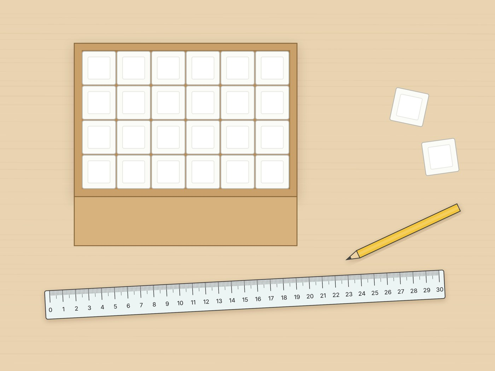

전체 단원 › 실험·활동 › 6학년 1학기 수학
각설탕 부피 재기

각설탕을 쌓아 상자 크기를 비교하고, 왜 cm³라는 약속 단위가 필요한지 알아봐요.
40분 · 난이도 ★★☆ 보통
준비물
- 작은 상자 2~3개 — 치약 상자, 과자 상자, 약 상자처럼 뚜껑이 열리는 것
- 각설탕 1봉지 — 마트 커피 코너. 실험 후 다시 봉지에 담아 써요.
- 자 — 30cm 자
- 부피 기록지 도안 — 아래에서 내려받아 인쇄해요
하는 방법
- 각설탕 한 개 재기
각설탕 한 변의 길이를 자로 재서 기록지에 적어요. 회사마다 크기가 조금씩 달라서 꼭 직접 재야 해요. - 예상하기
상자들을 눈으로만 보고 어느 상자가 가장 큰지, 각설탕이 몇 개 들어갈지 예상해서 적어요. - 한 층 깔고 쌓기
상자 바닥에 각설탕을 빈틈없이 한 층 깔고 개수를 세요. 그다음 몇 층까지 쌓이는지 확인해 '한 층 개수 × 층 수'로 계산해요. - 자로 재서 계산하기
상자 안쪽의 가로, 세로, 높이를 cm로 재고 곱해서 부피(cm³)를 구해요. - 두 결과 비교하기
각설탕 개수와 계산한 cm³가 왜 다른지 이야기해요. 기록지의 질문에 답을 적어요.
생각해 봐요
- 각설탕을 하나하나 다 세지 않고 빨리 세는 방법은 무엇인가요?
- 모양은 다른데 부피는 같은 상자가 있을까요?
- 각설탕 한 개는 몇 cm³쯤 될까요?
개념 정리
부피는 물건이 차지하는 공간의 크기예요. 각설탕으로 재면 각설탕 크기에 따라 개수가 달라져서 사람마다 답이 달라요. 그래서 모두가 똑같이 쓰려고 '한 변이 1cm인 정육면체'를 약속 단위로 정했어요. 이것이 1cm³(1세제곱센티미터)예요.
학교 교육과정 연결
- [6수03-18] 부피 단위 1cm³, 1m³를 알며, 그 관계를 이해한다.
- [6수03-19] 직육면체와 정육면체의 부피를 구하는 방법을 이해하고, 이를 구할 수 있다.